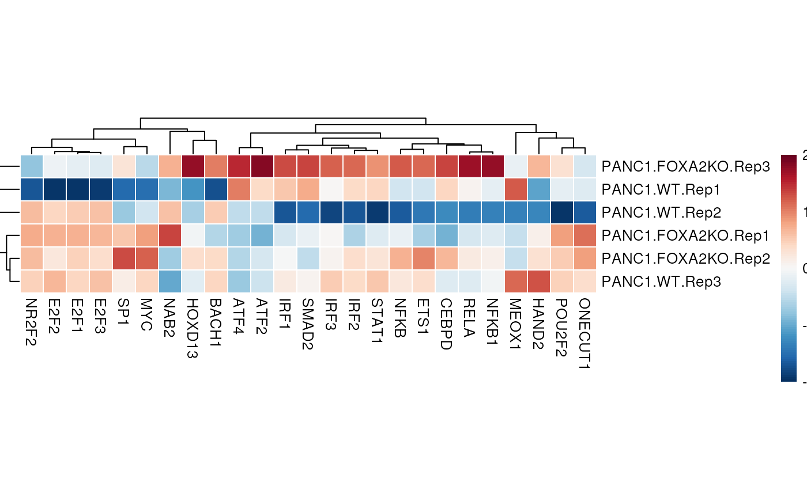
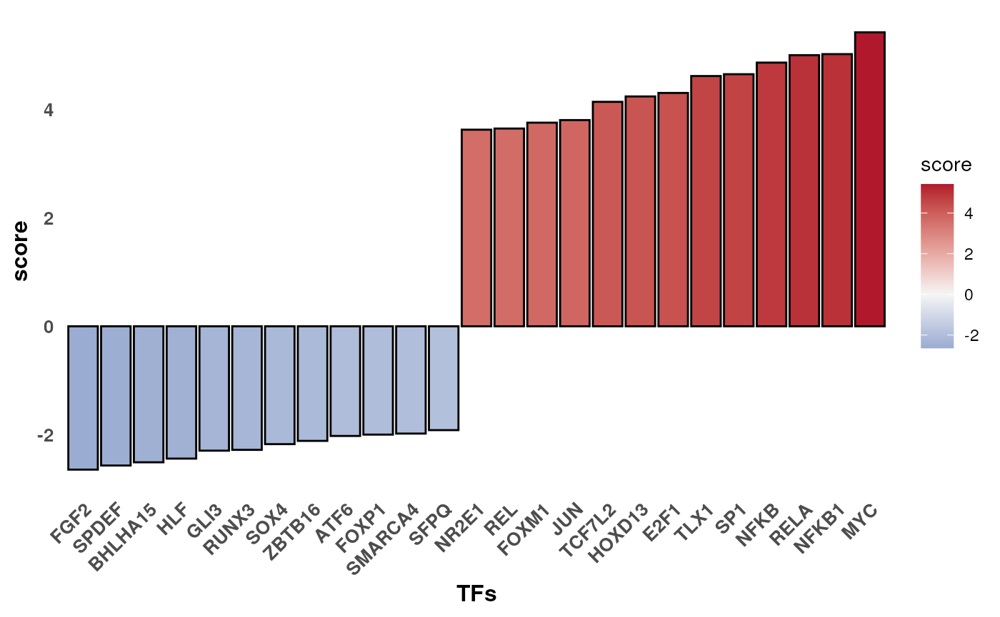
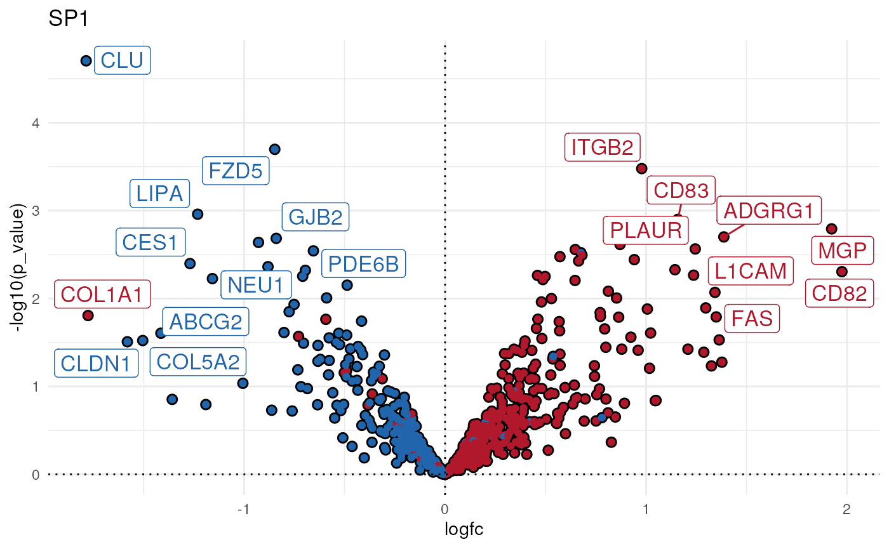

Transcription factor activity inference in bulk RNA-seq
Pau Badia-i-Mompel
Heidelberg UniversiySource:
vignettes/tf_bk.Rmd
tf_bk.RmdBulk RNA-seq yield many molecular readouts that are hard to interpret by themselves. One way of summarizing this information is by inferring transcription factor (TF) activities from prior knowledge.
In this notebook we showcase how to use decoupleR for
transcription factor activity inference with a bulk RNA-seq data-set
where the transcription factor FOXA2 was knocked out in pancreatic
cancer cell lines.
The data consists of 3 Wild Type (WT) samples and 3 Knock Outs (KO). They are freely available in GEO.
Loading the data-set
Here we used an already processed bulk RNA-seq data-set. We provide
the normalized log-transformed counts, the experimental design meta-data
and the Differential Expressed Genes (DEGs) obtained using
limma.
For this example we use limma but we could have used
DeSeq2, edgeR or any other statistical
framework. decoupleR requires a gene level statistic to perform
enrichment analysis but it is agnostic of how it was generated. However,
we do recommend to use statistics that include the direction of change
and its significance, for example the t-value obtained for
limma(t) or
DeSeq2(stat). edgeR does not return such
statistic but we can create our own by weighting the obtained logFC by
pvalue with this formula: -log10(pvalue) * logFC.
We can open the data like this:
inputs_dir <- system.file("extdata", package = "decoupleR")
data <- readRDS(file.path(inputs_dir, "bk_data.rds"))From data we can extract the mentioned information. Here
we see the normalized log-transformed counts:
# Remove NAs and set row names
counts <- data$counts %>%
dplyr::mutate_if(~ any(is.na(.x)), ~ if_else(is.na(.x),0,.x)) %>%
column_to_rownames(var = "gene") %>%
as.matrix()
head(counts)
#> PANC1.WT.Rep1 PANC1.WT.Rep2 PANC1.WT.Rep3 PANC1.FOXA2KO.Rep1
#> NOC2L 10.052588 11.949123 12.057774 12.312291
#> PLEKHN1 7.535115 8.125993 8.714880 8.048196
#> PERM1 6.281242 6.424582 6.589668 6.293285
#> ISG15 10.938252 11.469081 11.425415 11.549986
#> AGRN 6.956335 7.196108 7.522550 7.061549
#> C1orf159 9.546224 9.788721 9.794589 9.850830
#> PANC1.FOXA2KO.Rep2 PANC1.FOXA2KO.Rep3
#> NOC2L 12.139918 11.494205
#> PLEKHN1 8.290154 8.621239
#> PERM1 6.486136 6.775344
#> ISG15 11.371464 11.178157
#> AGRN 7.485534 7.071555
#> C1orf159 9.988069 9.965357The design meta-data:
design <- data$design
design
#> # A tibble: 6 × 2
#> sample condition
#> <chr> <chr>
#> 1 PANC1.WT.Rep1 PANC1.WT
#> 2 PANC1.WT.Rep2 PANC1.WT
#> 3 PANC1.WT.Rep3 PANC1.WT
#> 4 PANC1.FOXA2KO.Rep1 PANC1.FOXA2KO
#> 5 PANC1.FOXA2KO.Rep2 PANC1.FOXA2KO
#> 6 PANC1.FOXA2KO.Rep3 PANC1.FOXA2KOAnd the results of limma, of which we are interested in
extracting the obtained t-value and p-value from the contrast:
# Extract t-values per gene
deg <- data$limma_ttop %>%
select(ID, logFC, t, P.Value) %>%
filter(!is.na(t)) %>%
column_to_rownames(var = "ID") %>%
as.matrix()
head(deg)
#> logFC t P.Value
#> RHBDL2 -1.823940 -12.810588 3.030276e-06
#> PLEKHH2 -1.568830 -10.794453 9.932046e-06
#> HEG1 -1.725806 -9.788112 1.939734e-05
#> CLU -1.786200 -9.761618 1.975813e-05
#> FHL1 2.087082 8.950191 3.552199e-05
#> RBP4 -1.728960 -8.529074 4.904579e-05CollecTRI network
CollecTRI is a comprehensive resource containing a curated collection of TFs and their transcriptional targets compiled from 12 different resources. This collection provides an increased coverage of transcription factors and a superior performance in identifying perturbed TFs compared to our previous DoRothEA network and other literature based GRNs. Similar to DoRothEA, interactions are weighted by their mode of regulation (activation or inhibition).
For this example we will use the human version (mouse and rat are
also available). We can use decoupleR to retrieve it from
OmniPath. The argument split_complexes keeps
complexes or splits them into subunits, by default we recommend to keep
complexes together.
net <- get_collectri(organism='human', split_complexes=FALSE)
net
#> # A tibble: 43,178 × 3
#> source target mor
#> <chr> <chr> <dbl>
#> 1 MYC TERT 1
#> 2 SPI1 BGLAP 1
#> 3 SMAD3 JUN 1
#> 4 SMAD4 JUN 1
#> 5 STAT5A IL2 1
#> 6 STAT5B IL2 1
#> 7 RELA FAS 1
#> 8 WT1 NR0B1 1
#> 9 NR0B2 CASP1 1
#> 10 SP1 ALDOA 1
#> # ℹ 43,168 more rowsActivity inference with Univariate Linear Model (ULM)
To infer TF enrichment scores we will run the Univariate Linear Model
(ulm) method. For each sample in our dataset
(mat) and each TF in our network (net), it
fits a linear model that predicts the observed gene expression based
solely on the TF’s TF-Gene interaction weights. Once fitted, the
obtained t-value of the slope is the score. If it is positive, we
interpret that the TF is active and if it is negative we interpret that
it is inactive.

To run decoupleR methods, we need an input matrix
(mat), an input prior knowledge network/resource
(net), and the name of the columns of net that we want to
use.
# Run ulm
sample_acts <- run_ulm(mat=counts, net=net, .source='source', .target='target',
.mor='mor', minsize = 5)
sample_acts
#> # A tibble: 3,480 × 5
#> statistic source condition score p_value
#> <chr> <chr> <chr> <dbl> <dbl>
#> 1 ulm ABL1 PANC1.FOXA2KO.Rep1 -0.428 0.669
#> 2 ulm ABL1 PANC1.FOXA2KO.Rep2 -0.104 0.917
#> 3 ulm ABL1 PANC1.FOXA2KO.Rep3 0.335 0.738
#> 4 ulm ABL1 PANC1.WT.Rep1 0.142 0.887
#> 5 ulm ABL1 PANC1.WT.Rep2 -0.344 0.731
#> 6 ulm ABL1 PANC1.WT.Rep3 -0.523 0.601
#> 7 ulm AHR PANC1.FOXA2KO.Rep1 1.58 0.113
#> 8 ulm AHR PANC1.FOXA2KO.Rep2 1.70 0.0885
#> 9 ulm AHR PANC1.FOXA2KO.Rep3 1.85 0.0640
#> 10 ulm AHR PANC1.WT.Rep1 1.38 0.169
#> # ℹ 3,470 more rowsVisualization
From the obtained results we will observe the most variable activities across samples in a heat-map:
n_tfs <- 25
# Transform to wide matrix
sample_acts_mat <- sample_acts %>%
pivot_wider(id_cols = 'condition', names_from = 'source',
values_from = 'score') %>%
column_to_rownames('condition') %>%
as.matrix()
# Get top tfs with more variable means across clusters
tfs <- sample_acts %>%
group_by(source) %>%
summarise(std = sd(score)) %>%
arrange(-abs(std)) %>%
head(n_tfs) %>%
pull(source)
sample_acts_mat <- sample_acts_mat[,tfs]
# Scale per sample
sample_acts_mat <- scale(sample_acts_mat)
# Choose color palette
palette_length = 100
my_color = colorRampPalette(c("Darkblue", "white","red"))(palette_length)
my_breaks <- c(seq(-3, 0, length.out=ceiling(palette_length/2) + 1),
seq(0.05, 3, length.out=floor(palette_length/2)))
# Plot
pheatmap(sample_acts_mat, border_color = NA, color=my_color, breaks = my_breaks) 
We can also infer TF activities from the t-values of the DEGs between KO and WT:
# Run ulm
contrast_acts <- run_ulm(mat=deg[, 't', drop=FALSE], net=net, .source='source', .target='target',
.mor='mor', minsize = 5)
contrast_acts
#> # A tibble: 580 × 5
#> statistic source condition score p_value
#> <chr> <chr> <chr> <dbl> <dbl>
#> 1 ulm ABL1 t 1.08 0.280
#> 2 ulm AHR t 1.19 0.234
#> 3 ulm AIRE t -0.155 0.877
#> 4 ulm AP1 t 2.42 0.0154
#> 5 ulm APEX1 t 0.877 0.380
#> 6 ulm AR t -0.264 0.792
#> 7 ulm ARID1A t -0.236 0.813
#> 8 ulm ARID3A t 1.85 0.0639
#> 9 ulm ARID3B t 1.24 0.215
#> 10 ulm ARID4A t -0.0674 0.946
#> # ℹ 570 more rowsLet’s show the changes in activity between KO and WT:
# Filter top TFs in both signs
f_contrast_acts <- contrast_acts %>%
mutate(rnk = NA)
msk <- f_contrast_acts$score > 0
f_contrast_acts[msk, 'rnk'] <- rank(-f_contrast_acts[msk, 'score'])
f_contrast_acts[!msk, 'rnk'] <- rank(-abs(f_contrast_acts[!msk, 'score']))
tfs <- f_contrast_acts %>%
arrange(rnk) %>%
head(n_tfs) %>%
pull(source)
f_contrast_acts <- f_contrast_acts %>%
filter(source %in% tfs)
# Plot
ggplot(f_contrast_acts, aes(x = reorder(source, score), y = score)) +
geom_bar(aes(fill = score), stat = "identity") +
scale_fill_gradient2(low = "darkblue", high = "indianred",
mid = "whitesmoke", midpoint = 0) +
theme_minimal() +
theme(axis.title = element_text(face = "bold", size = 12),
axis.text.x =
element_text(angle = 45, hjust = 1, size =10, face= "bold"),
axis.text.y = element_text(size =10, face= "bold"),
panel.grid.major = element_blank(),
panel.grid.minor = element_blank()) +
xlab("TFs")
The TFs GLI3 and SPDEF are deactivated in KO when compared to WT, while MUC and NFKB1 seem to be activated.
We can further visualize the most differential target genes in each TF along their p-values to interpret the results. For example, let’s see the genes that are belong to SP1:
tf <- 'SP1'
df <- net %>%
filter(source == tf) %>%
arrange(target) %>%
mutate(ID = target, color = "3") %>%
column_to_rownames('target')
inter <- sort(intersect(rownames(deg),rownames(df)))
df <- df[inter, ]
df[,c('logfc', 't_value', 'p_value')] <- deg[inter, ]
df <- df %>%
mutate(color = if_else(mor > 0 & t_value > 0, '1', color)) %>%
mutate(color = if_else(mor > 0 & t_value < 0, '2', color)) %>%
mutate(color = if_else(mor < 0 & t_value > 0, '2', color)) %>%
mutate(color = if_else(mor < 0 & t_value < 0, '1', color))
ggplot(df, aes(x = logfc, y = -log10(p_value), color = color, size=abs(mor))) +
geom_point() +
scale_colour_manual(values = c("red","royalblue3","grey")) +
geom_label_repel(aes(label = ID, size=1)) +
theme_minimal() +
theme(legend.position = "none") +
geom_vline(xintercept = 0, linetype = 'dotted') +
geom_hline(yintercept = 0, linetype = 'dotted') +
ggtitle(tf)
Here blue means that the sign of multiplying the mor and
t-value is negative, meaning that these genes are
“deactivating” the TF, and red means that the sign is positive, meaning
that these genes are “activating” the TF.
Session information
#> ─ Session info ───────────────────────────────────────────────────────────────────────────────────────────────────────
#> setting value
#> version R Under development (unstable) (2024-03-28 r86224)
#> os Ubuntu 22.04.4 LTS
#> system x86_64, linux-gnu
#> ui X11
#> language en
#> collate en_US.UTF-8
#> ctype en_US.UTF-8
#> tz UTC
#> date 2024-04-02
#> pandoc 3.1.1 @ /usr/local/bin/ (via rmarkdown)
#>
#> ─ Packages ───────────────────────────────────────────────────────────────────────────────────────────────────────────
#> package * version date (UTC) lib source
#> backports 1.4.1 2021-12-13 [1] CRAN (R 4.5.0)
#> BiocManager 1.30.22 2023-08-08 [1] CRAN (R 4.5.0)
#> BiocParallel 1.37.1 2024-03-04 [1] Bioconduc~
#> BiocStyle * 2.31.0 2023-10-24 [1] Bioconductor
#> bit 4.0.5 2022-11-15 [1] CRAN (R 4.5.0)
#> bit64 4.0.5 2020-08-30 [1] CRAN (R 4.5.0)
#> bookdown 0.38 2024-03-04 [1] CRAN (R 4.5.0)
#> bslib 0.7.0 2024-03-29 [1] CRAN (R 4.5.0)
#> cachem 1.0.8 2023-05-01 [1] CRAN (R 4.5.0)
#> cellranger 1.1.0 2016-07-27 [1] CRAN (R 4.5.0)
#> checkmate 2.3.1 2023-12-04 [1] CRAN (R 4.5.0)
#> cli 3.6.2 2023-12-11 [1] CRAN (R 4.5.0)
#> codetools 0.2-20 2024-03-31 [1] CRAN (R 4.5.0)
#> colorspace 2.1-0 2023-01-23 [1] CRAN (R 4.5.0)
#> crayon 1.5.2 2022-09-29 [1] CRAN (R 4.5.0)
#> curl 5.2.1 2024-03-01 [1] CRAN (R 4.5.0)
#> decoupleR * 2.9.7 2024-04-02 [1] Bioconductor
#> desc 1.4.3 2023-12-10 [1] CRAN (R 4.5.0)
#> digest 0.6.35 2024-03-11 [1] CRAN (R 4.5.0)
#> dplyr * 1.1.4 2023-11-17 [1] CRAN (R 4.5.0)
#> evaluate 0.23 2023-11-01 [1] CRAN (R 4.5.0)
#> fansi 1.0.6 2023-12-08 [1] CRAN (R 4.5.0)
#> farver 2.1.1 2022-07-06 [1] CRAN (R 4.5.0)
#> fastmap 1.1.1 2023-02-24 [1] CRAN (R 4.5.0)
#> fs 1.6.3 2023-07-20 [1] CRAN (R 4.5.0)
#> generics 0.1.3 2022-07-05 [1] CRAN (R 4.5.0)
#> ggplot2 * 3.5.0 2024-02-23 [1] CRAN (R 4.5.0)
#> ggrepel * 0.9.5 2024-01-10 [1] CRAN (R 4.5.0)
#> glue 1.7.0 2024-01-09 [1] CRAN (R 4.5.0)
#> gtable 0.3.4 2023-08-21 [1] CRAN (R 4.5.0)
#> highr 0.10 2022-12-22 [1] CRAN (R 4.5.0)
#> hms 1.1.3 2023-03-21 [1] CRAN (R 4.5.0)
#> htmltools 0.5.8 2024-03-25 [1] CRAN (R 4.5.0)
#> httr 1.4.7 2023-08-15 [1] CRAN (R 4.5.0)
#> igraph 2.0.3 2024-03-13 [1] CRAN (R 4.5.0)
#> jquerylib 0.1.4 2021-04-26 [1] CRAN (R 4.5.0)
#> jsonlite 1.8.8 2023-12-04 [1] CRAN (R 4.5.0)
#> knitr 1.45 2023-10-30 [1] CRAN (R 4.5.0)
#> labeling 0.4.3 2023-08-29 [1] CRAN (R 4.5.0)
#> later 1.3.2 2023-12-06 [1] CRAN (R 4.5.0)
#> lattice 0.22-6 2024-03-20 [2] CRAN (R 4.5.0)
#> lifecycle 1.0.4 2023-11-07 [1] CRAN (R 4.5.0)
#> logger 0.3.0 2024-03-05 [1] CRAN (R 4.5.0)
#> lubridate 1.9.3 2023-09-27 [1] CRAN (R 4.5.0)
#> magrittr 2.0.3 2022-03-30 [1] CRAN (R 4.5.0)
#> Matrix 1.7-0 2024-03-22 [2] CRAN (R 4.5.0)
#> memoise 2.0.1 2021-11-26 [1] CRAN (R 4.5.0)
#> munsell 0.5.1 2024-04-01 [1] CRAN (R 4.5.0)
#> OmnipathR 3.11.10 2024-03-24 [1] Bioconduc~
#> parallelly 1.37.1 2024-02-29 [1] CRAN (R 4.5.0)
#> pheatmap * 1.0.12 2019-01-04 [1] CRAN (R 4.5.0)
#> pillar 1.9.0 2023-03-22 [1] CRAN (R 4.5.0)
#> pkgconfig 2.0.3 2019-09-22 [1] CRAN (R 4.5.0)
#> pkgdown 2.0.7 2022-12-14 [1] CRAN (R 4.5.0)
#> prettyunits 1.2.0 2023-09-24 [1] CRAN (R 4.5.0)
#> progress 1.2.3 2023-12-06 [1] CRAN (R 4.5.0)
#> purrr 1.0.2 2023-08-10 [1] CRAN (R 4.5.0)
#> R6 2.5.1 2021-08-19 [1] CRAN (R 4.5.0)
#> ragg 1.3.0 2024-03-13 [1] CRAN (R 4.5.0)
#> rappdirs 0.3.3 2021-01-31 [1] CRAN (R 4.5.0)
#> RColorBrewer 1.1-3 2022-04-03 [1] CRAN (R 4.5.0)
#> Rcpp 1.0.12 2024-01-09 [1] CRAN (R 4.5.0)
#> readr 2.1.5 2024-01-10 [1] CRAN (R 4.5.0)
#> readxl 1.4.3 2023-07-06 [1] CRAN (R 4.5.0)
#> rlang 1.1.3 2024-01-10 [1] CRAN (R 4.5.0)
#> rmarkdown 2.26 2024-03-05 [1] CRAN (R 4.5.0)
#> rvest 1.0.4 2024-02-12 [1] CRAN (R 4.5.0)
#> sass 0.4.9 2024-03-15 [1] CRAN (R 4.5.0)
#> scales 1.3.0 2023-11-28 [1] CRAN (R 4.5.0)
#> selectr 0.4-2 2019-11-20 [1] CRAN (R 4.5.0)
#> sessioninfo 1.2.2 2021-12-06 [1] CRAN (R 4.5.0)
#> stringi 1.8.3 2023-12-11 [1] CRAN (R 4.5.0)
#> stringr 1.5.1 2023-11-14 [1] CRAN (R 4.5.0)
#> systemfonts 1.0.6 2024-03-07 [1] CRAN (R 4.5.0)
#> textshaping 0.3.7 2023-10-09 [1] CRAN (R 4.5.0)
#> tibble * 3.2.1 2023-03-20 [1] CRAN (R 4.5.0)
#> tidyr * 1.3.1 2024-01-24 [1] CRAN (R 4.5.0)
#> tidyselect 1.2.1 2024-03-11 [1] CRAN (R 4.5.0)
#> timechange 0.3.0 2024-01-18 [1] CRAN (R 4.5.0)
#> tzdb 0.4.0 2023-05-12 [1] CRAN (R 4.5.0)
#> utf8 1.2.4 2023-10-22 [1] CRAN (R 4.5.0)
#> vctrs 0.6.5 2023-12-01 [1] CRAN (R 4.5.0)
#> vroom 1.6.5 2023-12-05 [1] CRAN (R 4.5.0)
#> withr 3.0.0 2024-01-16 [1] CRAN (R 4.5.0)
#> xfun 0.43 2024-03-25 [1] CRAN (R 4.5.0)
#> xml2 1.3.6 2023-12-04 [1] CRAN (R 4.5.0)
#> yaml 2.3.8 2023-12-11 [1] CRAN (R 4.5.0)
#>
#> [1] /usr/local/lib/R/site-library
#> [2] /usr/local/lib/R/library
#>
#> ──────────────────────────────────────────────────────────────────────────────────────────────────────────────────────